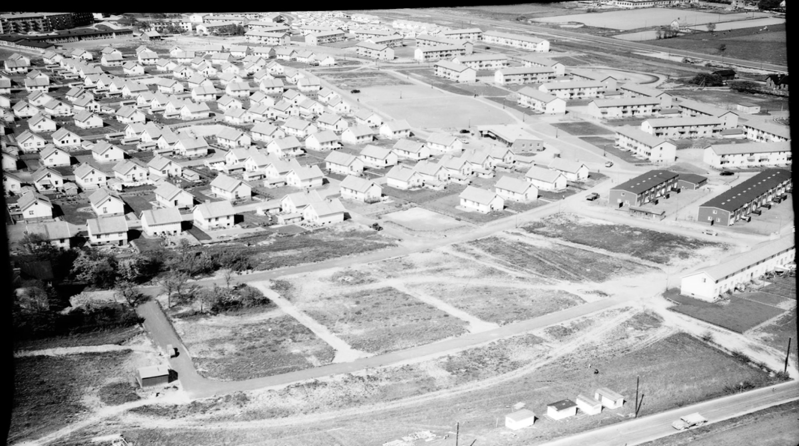

En kort historik
Järnbrott gick från åkermark till villakvarter på några få år. Föreningen har funnits med sedan de första husen stod färdiga.

I början av 1950-talet var Järnbrott fortfarande en landsbygd med små gårdar och ängar. Men staden expanderade och Järnbrott skulle snart bli en del av Göteborg. 1952 bildades Järnbrotts egnahemsförening av blivande husägare som flyttade in i det nya bostadsområdet.
Föreningen spelade en viktig roll i de nya invånarnas liv. Man hjälpte varandra med praktiska frågor som att ordna buss och mataffär, och anordnade aktiviteter som kurser i trädgårdsskötsel och midsommarfester.
Föreningen har sedan dess fortsatt att vara en samlingspunkt för Järnbrottsborna. Idag anordnar vi ett antal aktiviteter varje år och delar ut flygbladet Järnbrottsnytt till husägarna i området.
Föreningen välkomnar områdets boende att engagera sig, så att vi tillsammans kan utveckla den framåt.